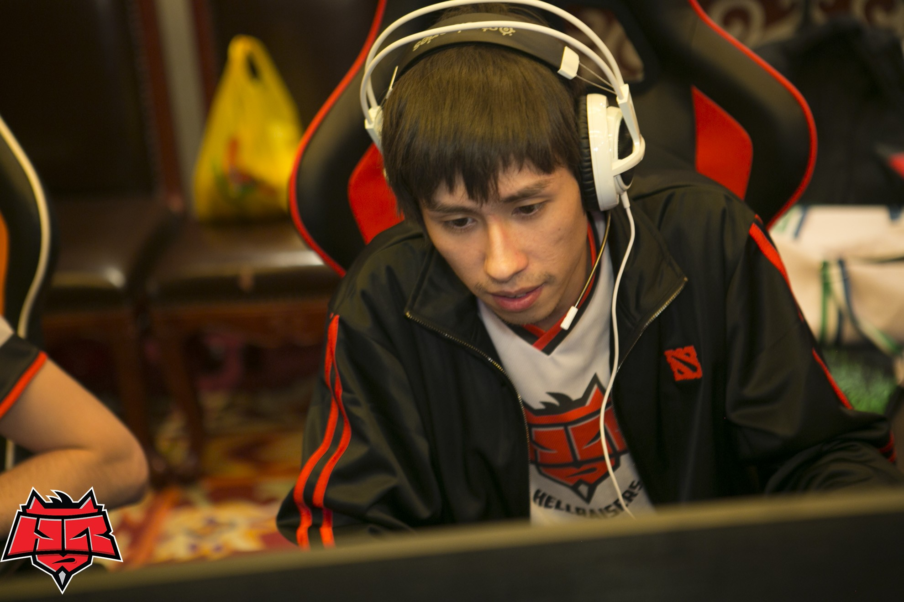
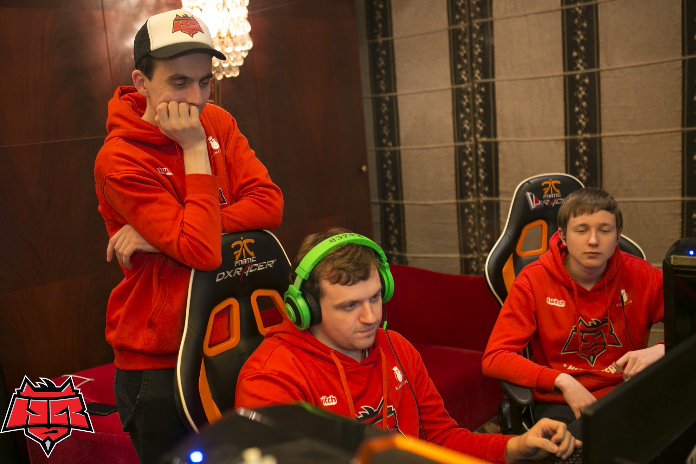

Скоротечно завершаются три дня перерыва между баталиями в Шанхае. Из 16-ти команд, получивших право участвовать в групповой стадии DAC, в плей-офф пробились 12. К счастью, HellRaisers оказалось по силам попасть в топ-8, что дало нашим парням великолепный бонус - верхнюю сетку. Увидеть ее полностью можете в репортаже.
Однако теперь нужно быть готовыми противостоять сильнейшим! И Vici, и потенциальные будущие оппоненты по сетке виннеров - невероятно мощные коллективы, которые отлично себя показали на первом этапе турнира и явно намерены добраться до наивысших ступеней пьедестала чемпионата. Начиная с первых матчей плей-офф, все игры будут проводиться на сцене, что добавит в игры такую важнейшую составляющую, как поддержка болельщиков.
По традиции. представляем вашему вниманию ответ на самый интересный вопрос из предыдущего превью. Ответил менеджер Dota2-состава Валентин "valentiNich" Кравченко.
 KasYa: Как ты думаешь, чего не хватает вашей команде на данный момент, и как это исправить?
KasYa: Как ты думаешь, чего не хватает вашей команде на данный момент, и как это исправить?
 valentiNich: Как и в любом коллективе наша трудность - человеческая природа. Это, точнее, разнопланость характеров, к каждому из которых нужен свой подход. Ведь друг познается в беде, верно? В критической ситуации, когда времени для принятия решения сведено к минимуму. А Dota мирового уровня - это игра, где важна каждая мелочь, каждое своевеременно сказанное слово и предложенная идея. С опытом это всё будет доведено до определенного автоматизма, но пока что Dread, Gorec, Afoninje, Goddam и Artes - это молодые, пусть и очень талантливые люди, которым многому стоит научиться. И, в первую очередь, вырасти как команде, научиться подходить к любому делу, за которое они берутся, с полной отдачей, самоиронией и восприимчивостью к критике. Так что им я пожелаю лишь оставаться скромными людьми, рвущимися к заветным мечтам.
valentiNich: Как и в любом коллективе наша трудность - человеческая природа. Это, точнее, разнопланость характеров, к каждому из которых нужен свой подход. Ведь друг познается в беде, верно? В критической ситуации, когда времени для принятия решения сведено к минимуму. А Dota мирового уровня - это игра, где важна каждая мелочь, каждое своевеременно сказанное слово и предложенная идея. С опытом это всё будет доведено до определенного автоматизма, но пока что Dread, Gorec, Afoninje, Goddam и Artes - это молодые, пусть и очень талантливые люди, которым многому стоит научиться. И, в первую очередь, вырасти как команде, научиться подходить к любому делу, за которое они берутся, с полной отдачей, самоиронией и восприимчивостью к критике. Так что им я пожелаю лишь оставаться скромными людьми, рвущимися к заветным мечтам.
05.02, 13:00 CET -  HellRaisers vs
HellRaisers vs  Vici Gaming @bo3
Vici Gaming @bo3
Vici Gaming: Black, Super, iceiceice, fy, Fenrir
Самый неудобный из всех возможных соперников станет на пути "восставших из ада" в ближайший четверг. Игра между этими двумя коллективами в рамках группового этапа сопровождалась большими техническими проблемами, из-за чего удовольствие от просмотра игры вряд ли кто-то получил. Да и командам очень сложно играть, постоянно стыкаясь с неполадками, не зависящими от них самих. В итоге, наши парни очень быстро (чуть более 20 минут) позволили разрушить собственную базу, так и не показав свой потенциал. Кто знает - может это и к лучшему?

В том матче Vici готовили плацдарм для своей победы первые 15 минут, пытаясь выиграть дуэли 1 в 1 или отыскивая одиноко стоящих "львов" на карте. Нефатальное преимущество в 3-4 тысячи по золоту и опыту стало ключевым в этой игре. Китайский коллектив сумел им воспользоваться, в чем его огромная заслуга. Они не попытались нарастить преимущество за счет фарма, они приняли смелое решение реализовать полученный перевес немедленно. Естественно, они подвергли себя большому риску, ведь одна проигранная драка могла бы полностью перевернуть экономику команд, но их план сработал - они смогли быстро нокаутировать наших парней.
Из-за того, что надпись "gg" мы увидели уже в третьем десятке минут игры, VG вряд ли оценили игру "львов" на себе в полной мере. Эти китайцы не успели ощутить всю прелесть противостояния с Dread и Ко на поздней стадии игры, не дали шанса нашим ребятам зацепиться за эту игру. С одной стороны, это доказывает их преимущество, а с другой стороны может быть использовано нашими парнями. Правильно проделанная работа над ошибками, другой пик или какая-то тактическая идея - и игра пойдет совсем по иному сценарию. Vici могут недооценить оппонента после легкой победы в групповом этапе, а потому, с точки зрения преподнесения неожиданностей, они - уязвимая мишень.
Но на стороне Vici в этой игре будет опыт, в том числе больших игр и сцен. Более того, поддержка в Шанхае будет чуть более, чем полностью на их стороне, а потому HR очень повезет, если их игру всё-таки перенесут в отель. Такой сценарий возможен, если другие матчи верхней сетки затянутся, и наши парни не успеют сесть за компьютеры до закрытия стадиона. Однако на это рассчитывать вряд ли стоит, и готовить себя нужно к худшему. Перед менеджером состава и самими ребятами стоит сложнейшая задача абстрагироваться от происходящего вокруг и показать свою лучшую игру.

Соперник не простит ошибок, соперник грозен и невероятно силен. Однако нет таких команд, обыграть которые невозможно, и многие, в том числе HellRaisers, это неоднократно доказывали. Всё, что можем сделать мы, сидя дома и наблюдая за играми нашей команды по Интернету, это написать мотивирующий комментарий на сайте, в наших группах в социальных сетях, нарисовать мем и т.д. Тепло от фанатов передается, несмотря на огромные расстояния, и помогает во время официальных матчей.
Хотите задать вопрос игроку или менеджеру нашей команды? Делайте это в комментариях к этой новости на сайте! В конце каждого игрового дня "львы" ответят на лучший из них, а мы тут же опубликуем это на страницах hellraisers.pro!
Не пропустите, первый раунд сетки виннеров Dota 2 Asia Championship - HellRaisers vs Vici Gaming: четверг, 5 февраля, 14:00 по Киеву (15:00 по Москве)! Подробности турнира читайте в нашем репортаже.
Болейте за HellRaisers!
Комментарии (6)